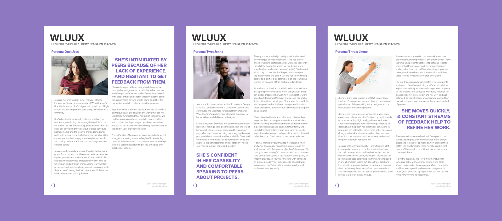

Conceptualizing a platform for student and alumni networking
PROJECT DETAILS
| Developed | 2018 |
| Class | UX Strategy (UX103) |
| Status | Finished Concept |
| Platforms | Mobile & Web |
| Tools |
Adobe Illustrator Adobe Xd |
| Photography |
Joel Schellenberger Ethan Mills |
| Models |
Fil Telescu Anna Bolger Liam Bullock |
| Full Report | Download PDF |
{kind=link}
{kind=link}
{kind=link}
{kind=link}
{kind=link}
PROJECT DESCRIPTION
My goal for this project (at its inception) was to build a foundational concept for a platform where current students enrolled in User Experience Design at Wilfrid Laurier University can interact with each other, their professors, and alumni of the program to share their experiences, their work and their knowledge with one another. The platform should include options to share portfolio work that incorporates both process work and final products, as well as text based content with a focus on sharing experiential learning at companies or events. There are valuable resources to be exchanged between alumni and students, as well as current students who have previously gone through classes. The exchange of information is the foundation of the platform -- the ability to solicit advice or gain knowledge through the previous experiences of those alum should prove invaluable to first years working on projects in the program, and eventually working on projects in the real world.
Beginning with a competitive analysis, project scope and UX plan helped to contextualize the rest of the work on the project, which was then followed by some user research on similar projects in the networking and information sharing spaces. The data collected from that research phase was carefully analyzed for the purpose of building personas and subsequent experience maps for those personas. Beyond that, I began prototyping a potential interface design for both web and mobile and eventually moved into some testing of those interface designs. Finally, in a project reflection, I made recommendations for anyone moving forward on the project or a similar project in this space.
Project Planning / Initial Research
Other platforms in this space that were considered included other social media platforms such as Behance, Dribbble, and Instagram. These platforms work to visually represent a users work while allowing the opportunity to connect over said work in a comment section. For text-based contributions, I also considering Medium (not listed).
Dribbble:
- Posting by invitation only
- Strong community
- Bright, generally lighter palette
- Option to solicit work via profiles
- Portfolio page for each member
- Supports variety of post formats
- Powerful search function
- Supports in-depth write-ups
- Promotes sharing process work
Behance:
- Posts allowed via subscription to the Adobe Creative Cloud
- Geared toward professionals
- Option to solicit work via profiles
- Portfolio page for each member
- Supports variety of post formats
- Average search function
- Supports in-depth write-ups
- Process work not necessarily encouraged
Instagram:
- Posts allowed freely to anyone
- "Selfish" community
- Less control over palette
- Minimal options to solicit work
- Each member has a page, sorted in grid view or individually
- Post sizes and formats limited
- Lack of potential for explanations
- Inability to sort inhibits process
My competitors each have characteristics that set them apart from each other and strengths that I looked to adapt for wluUX. To name a few examples, Dribbble’s exclusivity promotes high-quality work, and fosters the growth of a strong community based on it’s size. As a small initial cohort and overall smaller program, UXD at Laurier should take note of any and all opportunities to really develop the community into a thriving group that is encouraged to share their knowledge and resources with each other. Behance’s platform is built around custom post sizes and various disciplines of design, along with the ability to immediately get in touch with a designer. Instagram’s platform allows quick and easy posting with the ability to digest a bunch of similar work quickly to get a larger scope of an overall idea or project type. Each has their benefits but each lacks aspects that are important for those looking to start a project and do meaningful work in a similar vein.
After establishing my content requirements for the project (brand package, research, prototypes, tests, and mockups), as well as establishing a project calendar, I moved into my "UX Plan." Some key points that I kept in mind while working through this project as established in the 'UX Plan' were:
- Avoid designing for yourself (despite this project being in a space that you work in)
- Lean on analytic assessment for validation
- Validate as many assumptions and design decisions as possible within constraints
- Understand that you are making an improvement on existing technology, not re-inventing the wheel
- Lean on (positive) previously established patterns / standards in other interfaces
Research / Analysis
Method One: User Interviews
When looking over potential ways to gather data on my stakeholders needs and desires for a platform like this one, it became clear to me that I didn’t necessarily need to establish the medium of the project through my research. It was always going to be a digital platform and it was always going to focus on an exchange of information, so with the limited resources I had available to me in terms of time and money I knew it was important to use that foundational knowledge about the direction of the process to focus my questions and research on that exchange.
When developing interview questions (the first method embraced), I wanted to get clarification on what kind of interactions my peers (and eventual users) found valuable and engaging, as well as the formats these conversations take place under. "What kind of interactions leave you feeling inspired and what conversations are too superficial to be valuable?" "What kind of feedback do you find actionable and what kind of feedback isn’t worth much to you?" "Do you want feedback from your peers on work at all or strictly from profs? Alumni? How do you communicate your ideas?"
Some of the challenges the participants listed in their answers during the interviews included the speed and scope of the communication of their ideas. A core principle of UX Design is the idea of visually representing our ideas quickly and effectively, and a number of students listed this as a potential struggle when speaking on presenting their work to peers, professors and potential employers. According to the people I spoke to, there simply isn’t a basic portfolio manager available that hosts student work for free with the level of customization students would like.
Another thing that came up often was the formality of conversations while soliciting feedback; the impact of the feedback and likeliness of that feedback being actionable varies based on how formal the conversation is, and stu- dents are more likely to take feedback seriously if it’s given in a meeting with a professor as opposed to an informal text conversation with peers. I believe this comes down to an issue credibility; when receiving feedback from peo- ple they respect, students are more likely to actually be impacted by feedback that is each of two things: supplied by someone who they understand to have some authority on the subject, and focused on an individual element of a project rather than an over-arching concept. Without these key elements present, students self-identified as being less receptive to feedback; something I confirmed under my next research method.
Method Two: Contextual Inquiry
Contextual inquiries are great opportunities to validate some of the answers given during interviews and get insight into the thoughts and processes of the users. Participants often frame their answers during interviews to make themselves appear a certain way, especially in a process like this one in which I’m interviewing a series of peers. By observing their actions in their workspace, you get a more organic presentation of user processes and further insight into what their actual experience is like rather than insight into their work from their perspective.
I observed two separate peers as they worked through separate projects, paying careful attention to their workflows for soliciting feedback and sharing finished work to narrow down what ‘networking’ meant to them in a UX design context. One was working in a small group, soliciting in person peer-to-peer feedback throughout the duration of the process, and one was working individually and soliciting feedback from online contemporaries. This method helps me to focus in on some of the key observations from the data I gathered in my interviews.
""...at their core the interactions of my two subjects were the same; they both reached out to contemporaries to try and solicit some sort of advice on how to proceed based on mutual trust. Their experiences, however, were quite different -- one had a very quick and easy way to gather that information and adjust to it, where it interrupted and essentially halted the other’s workflow."
When observing the workflow of the subject working on an individual project in the presence of his colleagues, the process of gathering feedback on low-fidelity mockups and initial building of concepts was incredibly fluid -- there was no real pause for reflection, and moments of reflection were often no longer than 60 seconds to a minute. This is a much different experience than the subject working individually had -- their process for soliciting feedback was to stop and reach out to those not in his immediate vicinity and either try and explain the concept and gather feedback based on the verbal explanation of the concept, or try and communicate with their peers looking to offer feedback digitally, by uploading photographs of their work and trying to gather feedback on those representations of their work. This contrast was really interesting to me, because at their core the interactions of my two subjects were the same; they both reached out to contemporaries to try and solicit some sort of advice on how to proceed based on mutual trust. Their experiences, however, were quite different -- one had a very quick and easy way to gather that information and adjust to it, where it interrupted and essentially halted the other’s workflow.
Something else really important to note here was that the colleagues in my first subject’s case (their roommates) were comfortable offering unsolicited recommendations based on a previously established comfort level, as roommates and as students in the same cohort of UX. The feedback was aesthetic or simple in nature at times, but also occasionally based on the core of the project or a core interaction of the project that they thought should be adjusted. The adjustments happened quickly, again speaking to the fluidity of the process in this instant. There wasn’t so much a formal question seeking their opinion on a particular aspect of the project but rather an open invitation to give feedback. My second subject, on the other hand, had a very starkly different experience with the gathering of their feedback -- because the ask had to be specific enough to get feedback from someone not immediately physically exposed to the project, the questioning has to be tailored to a certain aspect and therefore they didn’t get the range of feedback that my first subject did from their roommates. However, there were clear parallels in their processes, including who they trusted to give them the feedback and their willingness to adapt to the feedback.
Now, unfortunately because of time constraints I was unable to see either of these participants share their work on the projects I observed them gathering feedback on, however I had them walk through what their typical process looked like for displaying and archiving their work for future professional reference, and their responses could not have been more different. My first subject, the one who worked in the environment with their roommates, archived their work on a self-built online portfolio and took the time to do fairly lengthy write-ups about their experiences working on each of their projects, displaying some process work as well as the finished projects. They had created high-fidelity mockups that displayed a clear attention to detail in the presentation of their work and their explanations and inclusion of process work indicated their understanding of what their priorities should be in the display of their work. My other subject, on the other hand, didn’t know where to begin when I asked them about displaying their information in a web-based portfolio. It’s important to note that the second subject had very little experience doing client work or attempting to market themselves, whereas my first had extensive experience.
What struck me from this series of observations was how starkly different their processes for displaying previous work were. My first subject had an almost streamlined approach to the addition of new work into their portfolio, allowing them to add frequently as new work was completed and giving them the opportunity to focus their energy on their work rather than it’s display. My second subject had a limited understanding of how to go about beginning to display their work for potential employers and a lack of exposure to the typical practices utilized by industry professionals. They knew of tools available to aide in the process, but did not necessarily feel like the initial time/capital investment was worth it to utilize those tools and display their work. The barrier of entry for the establishment of the portfolio was a lot to handle and ultimately deterred them from establishing any sort of marketable presence. This difference was evident in their workflows as well, and each of them displayed a different aptitude of strength during the development phases of both the product and it’s displays.
Takeaways from Research / Addressable Data Points
The data gathered here, primarily qualitative, gave me a good idea of what kind of priorities needed to be considered when developing my platform. Two things stick out to me after prioritizing the information: the need to facilitate the exchange of information in a meaningful way (that people also feel comfortable participating with), and the need to help people display the progress and finished products of the projects they’re working on.
- Feedback is most valuable when it is communicated effectively, coming from someone credible, and given in a format that isn’t formal enough that it discourages vulnerability
- Displaying content is something that frustrates people, especially initially -- the investment of time and resources may not be initially apparent, but it plays a huge roll in being able to communicate talent and ideas
- For both sides of an exchange to buy into a process, there needs to be value apparent on both sides
Personas
I moved at this point into translating the data from that in-depth analysis into personas, a more digestable form of summary to represent the types of users who I would be working to design for on this project. This is far from an exact science but I left this process with three key demographics to target when moving forward, and made a subsequent journey map detailing their experiences networking and giving / receiving feedback.

wluUX Figure 2.3: Persona Sheets
Research / Analysis
Moving forward, I began testing the existing low to medium fidelity prototypes I had built with users. These prototypes (which, in fairness, were more akin to wireframes in hindsight) covered a range of activites including two key content feeds; one that was primarily text based (for sharing experiences, tips, etc), and one that was primarily media driven (for sharing work and requesting feedback). From that point, I tested on both desktop and mobile platforms, curious to gather perspectives of users both in the creation and the consumption of content.

Some of the task evaluations conducted involved identifying if a piece of content was seeking feedback, switching between 'Projects' and 'Experiences' feed, accessing a posters profile, leaving feedback on work, contacting a post author directly, and beginning the process of posting content to the site. The user was presented with the mockup and asked to complete a task; this task was timed (with time on task being recorded) and the failure rate of users was recorded as well.
Editors note: In hindsight, I would conduct this evaluation with a bit more depth now; perhaps featuring screen recording, heat mapping, potentially eye tracking. Definitely more metrics to evaluate beyond time-on-task. This project was completed in my first year.
Notes / Points of Interest from Mobile Testing
- Tags system seems to work in identifying work as coursework... could it be expanded as a sorting option? Can it be more useful in search?
- Easily identifiable tabs layout, icons appear to be descriptive enough to indicate the difference between the projects and experience tabs respectively.
- Although there was a posting available on the splash page done by Anna, most users identified the search function as their strategy for locating Anna’s profile. Worth noting that because of the comfort users show with searching. How can that be utilized appropriately to give them valuable information?
- The comments being at the bottom of the description of the work may need reworking. The lack of visibility of other user’s comments also doesn’t bode particularly well for visibility and I personally feel this took too long for most users.
- Also worth noting that I probably shouldn’t ask these questions in such a linear order. The process of working through 2.4 likely influenced at least some participants ability to execute 2.5. That said, the tests are supposed to be specific enough that a user shouldn’t have to do one thing to get to another... seek clarification on that portion of the testing process.
Notes / Points of Interest from Desktop Testing
- In general, the processes seem more effective on web as opposed to mobile... maybe it’s the nature of professional style services like this one, but what it means is that I can’t discount the importance of the web view and should avoid prioritizing either platform.
- These are represented by words on web, rather than the icons on mobile, which gives users a bit more clarity and speeds this process up, even if it was a quick one to begin with on mobile.
- When this gets mocked-up into interactive, users want to be able to directly click on an authors name to go to their profile rather than view the work first.
- Neither platform had a particularly clear way of displaying the email address associated with the author of a post... needs clarification in future mockups... maybe icon based representation as opposed to text-based? Should also likely be moved to a place closer to the other intractable elements of the profile (such as the share menu).
- All but one participant reached for the web view to post their content, and the person who reached for mobile was the one unable to pass the task. I’m scrapping the ability to do it on mobile altogether. Saves time, which saves money.
Secondary Round of Testing
After gathering valuable insights in the first round of testing, it came time to adjust my mockups and start building out the digital versions of my mockups. A bit of deliberation and a lot of caffeine later, I felt satisfied with the mobile version mockups and moved quickly to slightly adjust my questioning to account for the changes I made. Those changes included things like putting a greater emphasis on the search function (to ease navigational headaches), as well as removing a misguided ‘Profiles’ tab from the navigation all together.
The mobile testing tasks stayed quite similar to the questions from the first round, as I felt there were addressable datapoints that could be used as opportunities for improvement on that side of the project. On the web platform, however, questioning focused on the fleshing out of the section of the site built to upload content, an essential feature of the platform that I made the decision to only have available through the web view.
One of the key points I looked to nail down as I began revisions and the development of the higher-fidelity work was search. I felt it vital that the search function worked quickly and provided users the information they not only know they’re looking for, but that they might not be aware they’re actually looking for. Seeing as search is something each user tested was comfortable with using, I saw it as an opportunity for seamless navigation of the platform; building the platform on an “ask for information and you shall receive it” structure (hypothetically) saves the user from having to really dig deep to understand the information architecture, but rather gives the user the opportunity to learn as they go and explore at their own pace while still finding information they require at the press of a button.
The other point I wanted to really hit home was the conversation piece. Going back to my user research, many of the people I spoke to identified the transfer of information as a point of value for them in using a service like this and that feedback is a key in establishing the kind of intrinsic motivation a user needs to possess to frequently utilize the site to it’s full potential. How can we make sure that if someone wants to receive feedback on a post that they can, in a way that encourages those viewing their post to give it? What kind of processes should be in place for a user to contact a poster privately to give more critical feedback? Addressing those questions started by refining the existing contact mechanisms.
Data Analysis / Summary of Testing Results
The data in these successive tests confirmed some of my beliefs about user flows within the systems I designed and corrected some errors I hadn’t accounted for in my earlier mockups. For example, all of the tasks were completed successfully by each participant in the second set of mobile testing, after refinements to the previous process of direct contact with an author of a post. Instead of only having an option to offer feedback via email or public comment, private comments were added as an option to avoid the need for users to leave the app to send an email.
The testing for the updated web platform was intriguing, as the repeated processes tested had their efficiency improved upon while the new workflows being tested leave room for improvement in both ease of completion and subsequent speed of completion. The private feedback option needed refinement in it’s ability to be identified as a feature (as I initially hid it behind the comment button without indicating there was another option beyond a public comment), and the upload and framing process for project work was the only task without a 100% completion rating.
Final Deliverables
Final Recommendations / Next Steps
Things I Am Proud Of (2 Years Later)
- Research conducted on this project was incredibly thorough for the time constraints and literal $0 budget
- The core concept for the platform seems to have sustainable legs, which can't be said about every idea I've ever had
- The simplification of the idea into the core concepts made it easy to validate assumptions through testing rounds and design an easy-to-use interface
Things I Would Do Differently (2 Years Later)
- I jumped far too early into wireframes and prototypes (which is something I have since steered away from)
- I still felt too close to the project to design objectively and would bring in some collaborative design elements should I revisit the project
- The interface design lacks polish, consistency, or any true design language (which may be a bit harsh, but my skills have improved since this point)
I would like to thank Dr. Abby Goodrum for her continued guidance and support throughout this project and projects like this one. I'd also like to thank Fil Telescu, Anna Bolger, Liam Bullock and Ethan Mills for their help in the execution of the creative vision of this project (as models, photographers, and friends). Thank you to Wilfrid Laurier University for continuing to allow me to create in your sandbox and mess with your toys.
This project was completed in my first year and looking back I'm quite proud of the work I was able to accomplish with very limited exposure to the practice of UX at the time. There are many decisions I would make differently should this project be completed with my current breadth of knowledge however the overall process and completion of iterative design practices is something I look back on with pride.
RELATED PROJECTS

Redesigned a dashboard enabling users to compare dense data sets in a variety of subjects with ease and clarity.
| Developed | 2019 |
| Client | World Council on City Data (Coursework) |
| Roles | UX Design, UI Design |
| Status | Presented to Client |
Addressed usability concerns that comprise the interactive dining table experience for senior-level interaction design course.
| Developed | 2019 |
| Client | Coursework |
| Roles | UX Design, UI Design |
| Status | Completed Proposal |

Designed a web dashboard interface for university recruiters to connect with and compare international applicants.
| Developed | 2018 |
| Client | Concourse Global |
| Roles | UX Design, UI Design |
| Status | Launched |

Have a problem that could use a good designer?
I encourage you to get in touch; I'd love to chat about what a potential solution could look like.